This work is licensed under a Creative Commons Attribution-ShareAlike 4.0 International License
Model¶
Following Kevin Systrom, we adapt the approach of (Bettencourt 2008) to compute real-time rolling estimates of pandemic parameters. (Bettencourt 2008) begin from a SIR model,
To this we add the possibility that not all cases are known. Cases get get detected at rate $I$, so cumulative confirmed cases, $C$, evolves as
Question
Should we add other states to this model? If yes, how? I think using death and hospitalization numbers in estimation makes sense.
The number of new confirmed cases from time $t$ to $t+\delta$ is then:
We will allow for the testing rate, $\tau$, and infection rate, $\beta$, to vary over time.
As in (Bettencourt 2008),
Note
The reproductive number is: $R_t \equiv \frac{S(t)}{N}\frac{\beta(t)}{\gamma}$.
Substituting the expression for $I_t$ into $k_t$, we have
Data¶
We use the same data as the US state model.
The data combines information on
- Daily case counts and deaths from JHU CSSE
- Daily Hospitalizations, recoveries, and testing from the Covid Tracking Project
- Covid related policy changes from Raifman et al
- Movements from Google Mobility Reports
- Hourly workers from Hoembase
Statistical Model¶
The above theoretical model gives a deterministic relationship between $k_t$ and $k_{t-1}$ given the parameters. To bring it to data we must add stochasticity.
Systrom’s approach¶
First we describe what Systrom does. He assumes that $R_{0} \sim Gamma(4,1)$. Then for $t=1, …, T$, he computes $P(R_t|k_{t}, k_{t-1}, … ,k_0)$ iteratively using Bayes’ rules. Specifically, he assumes and that $R_t$ follows a random walk, so the prior of $R_t | R_{t-1}$ is
so that
Note that this computes posteriors of $R_t$ given current and past cases. Future cases are also informative of $R_t$, and you could instead compute $P(R_t | k_0, k_1, …, k_T)$.
The notebook makes some mentions of Gaussian processes. There’s likely some way to recast the random walk assumption as a Gaussian process prior (the kernel would be $\kappa(t,t’) = \min{t,t’} \sigma^2$), but that seems to me like an unusual way to describe it.
Code¶
Let’s see how Systrom’s method works.
First the load data.
using DataFrames, Plots, StatsPlots, CovidSEIR
Plots.pyplot()
df = CovidSEIR.statedata()
df = filter(x->x.fips<60, df)
# focus on 10 states with most cases as of April 1, 2020
sdf = select(df[df[!,:date].==Dates.Date("2020-04-01"),:], :cases, :state) |>
x->sort(x,:cases, rev=true)
states=sdf[1:10,:state]
sdf = select(filter(r->r[:state] ∈ states, df), :cases, :state, :date)
sdf = sort(sdf, [:state, :date])
sdf[!,:newcases] = by(sdf, :state, newcases = :cases => x->(vcat(missing, diff(x))))[!,:newcases]
figs = []
for gdf in groupby(sdf, :state)
@show unique(gdf.state)
f = @df gdf plot(:date, :newcases, legend=:none, linewidth=2, title=unique(gdf.state)[1])
global figs = vcat(figs,f)
end
unique(gdf.state) = ["California"]
unique(gdf.state) = ["Florida"]
unique(gdf.state) = ["Illinois"]
unique(gdf.state) = ["Louisiana"]
unique(gdf.state) = ["Massachusetts"]
unique(gdf.state) = ["Michigan"]
unique(gdf.state) = ["New Jersey"]
unique(gdf.state) = ["New York"]
unique(gdf.state) = ["Pennsylvania"]
unique(gdf.state) = ["Washington"]
display(plot(figs[1:9]..., layout=(3,3)))

From this we can see that new cases are very noisy. This is especially problematic when cases jump from near 0 to very high values, such as in Illinois. The median value of and variance of new cases, $k_t$, are both $k_{t-1} e^{\gamma(R_t - 1)}$. Only huge changes in $R_t$ can rationalize huge jumps in new cases.
Let’s compute posteriors for each state.
using Interpolations, Distributions
function rtpost(cases, γ, σ, prior0, casepdf)
(rgrid, postgrid, ll) = rtpostgrid(cases)(γ, σ, prior0, casepdf)
w = rgrid[2] - rgrid[1]
T = length(cases)
p = [LinearInterpolation(rgrid, postgrid[:,t]) for t in 1:T]
coverage = 0.9
cr = zeros(T,2)
mu = vec(rgrid' * postgrid*w)
for t in 1:T
l = findfirst(cumsum(postgrid[:,t].*w).>(1-coverage)/2)
h = findlast(cumsum(postgrid[:,t].*w).<(1-(1-coverage)/2))
if !(l === nothing || h === nothing)
cr[t,:] = [rgrid[l], rgrid[h]]
end
end
return(p, mu, cr)
end
function rtpostgrid(cases)
# We'll compute the posterior on these values of R_t
rlo = 0
rhi = 8
steps = 500
rgrid = range(rlo, rhi, length=steps)
Δgrid = range(0.05, 0.95, length=10)
w = rgrid[2] - rgrid[1]
dr = rgrid .- rgrid'
fn=function(γ, σ, prior0, casepdf)
prr = pdf.(Normal(0,σ), dr) # P(r_{t+1} | r_t)
for i in 1:size(prr,1)
prr[i, : ] ./= sum(prr[i,:].*w)
end
postgrid = Matrix{typeof(σ)}(undef,length(rgrid), length(cases)) # P(R_t | k_t, k_{t-1},...)
like = similar(postgrid, length(cases))
for t in 1:length(cases)
if (t==1)
postgrid[:,t] .= prior0.(rgrid)
else
if (cases[t-1]===missing || cases[t]===missing)
pkr = 1 # P(k_t | R_t)
else
λ = max(cases[t-1],1).* exp.(γ .* (rgrid .- 1))
#r = λ*nbp/(1-nbp)
#pkr = pdf.(NegativeBinomial.(r,nbp), cases[t])
pkr = casepdf.(λ, cases[t])
if (all(pkr.==0))
@warn "all pkr=0"
@show t, cases[t], cases[t-1]
pkr .= 1
end
end
postgrid[:,t] = pkr.*(prr*postgrid[:,t-1])
like[t] = sum(postgrid[:,t].*w)
postgrid[:,t] ./= max(like[t], 1e-15)
end
end
ll = try
sum(log.(like))
catch
-710*length(like)
end
return((rgrid, postgrid, ll))
end
return(fn)
end
for σ in [0.1, 0.25, 1]
γ =1/7
nbp = 0.01
figs = []
for gdf in groupby(sdf, :state)
p, m, cr = rtpost(gdf.newcases, γ, σ, x->pdf(truncated(Gamma(4,1),0,8), x),
(λ,x)->pdf(Poisson(λ),x))
f = plot(gdf.date, m, ribbon=(m-cr[:,1], cr[:,2] - m), title=unique(gdf.state)[1], legend=:none, ylabel="Rₜ")
f = hline!(f,[1.0])
figs = vcat(figs, f)
end
l = @layout [a{.1h};grid(1,1)]
display(plot(plot(annotation=(0.5,0.5, "Poisson & σ=$σ"), framestyle = :none),
plot(figs[1:9]..., layout=(3,3)), layout=l))
end
(t, cases[t], cases[t - 1]) = (72, 2052, 215)
(t, cases[t], cases[t - 1]) = (90, 0, 1705)
(t, cases[t], cases[t - 1]) = (91, 3122, 0)
(t, cases[t], cases[t - 1]) = (55, 352, 2)
(t, cases[t], cases[t - 1]) = (89, 6103, 11115)
(t, cases[t], cases[t - 1]) = (54, -39, 74)
(t, cases[t], cases[t - 1]) = (90, -141, 479)
(t, cases[t], cases[t - 1]) = (91, 449, -141)
(t, cases[t], cases[t - 1]) = (72, 2052, 215)
(t, cases[t], cases[t - 1]) = (90, 0, 1705)
(t, cases[t], cases[t - 1]) = (91, 3122, 0)
(t, cases[t], cases[t - 1]) = (55, 352, 2)
(t, cases[t], cases[t - 1]) = (89, 6103, 11115)
(t, cases[t], cases[t - 1]) = (54, -39, 74)
(t, cases[t], cases[t - 1]) = (90, -141, 479)
(t, cases[t], cases[t - 1]) = (91, 449, -141)
(t, cases[t], cases[t - 1]) = (72, 2052, 215)
(t, cases[t], cases[t - 1]) = (90, 0, 1705)
(t, cases[t], cases[t - 1]) = (91, 3122, 0)
(t, cases[t], cases[t - 1]) = (55, 352, 2)
(t, cases[t], cases[t - 1]) = (89, 6103, 11115)
(t, cases[t], cases[t - 1]) = (54, -39, 74)
(t, cases[t], cases[t - 1]) = (90, -141, 479)
(t, cases[t], cases[t - 1]) = (91, 449, -141)
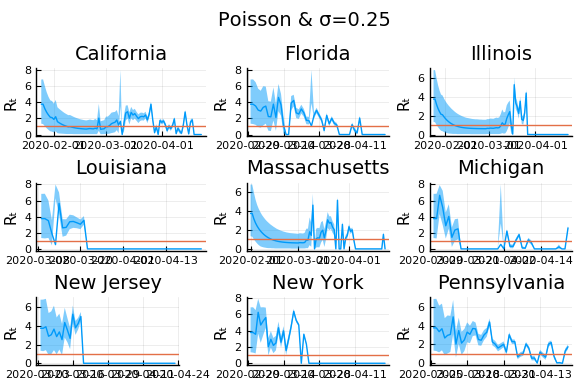 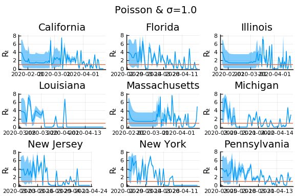
In these results, what is happening is that when new cases fluctuate too much, the likelihood is identically 0, causing the posterior calculation to break down. Increasing the variance of changes in $R_t$, widens the posterior confidence intervals, but does not solve the problem of vanishing likelihoods.
One thing that can “solve” the problem is choosing a distribution of $k_t | \lambda, k_{t-1}$ with higher variance. The negative binomial with parameters $\lambda p/(1-p)$ and $p$ has mean $\lambda$ and variance $\lambda/p$.
γ =1/7
σ = 0.25
Plots.closeall()
for σ in [0.1, 0.25, 0.5]
for nbp in [0.5, 0.1, 0.01]
figs = []
for gdf in groupby(sdf, :state)
p, m, cr = rtpost(gdf.newcases, γ, σ, x->pdf(truncated(Gamma(4,1),0,8), x),
(λ,x)->pdf(NegativeBinomial(λ*nbp/(1-nbp), nbp),x));
f = plot(gdf.date, m, ribbon=(m-cr[:,1], cr[:,2] - m), title=unique(gdf.state)[1], legend=:none, ylabel="Rₜ")
f = hline!(f,[1.0])
figs = vcat(figs, f)
end
l = @layout [a{.1h};grid(1,1)]
display(plot(plot(annotation=(0.5,0.5, "Negative binomial, p=$nbp, & σ=$σ"), framestyle = :none),
plot(figs[1:9]..., layout=(3,3)), layout=l, reuse=false))
end
end
(t, cases[t], cases[t - 1]) = (90, 0, 1705)
(t, cases[t], cases[t - 1]) = (91, 3122, 0)
(t, cases[t], cases[t - 1]) = (54, -39, 74)
(t, cases[t], cases[t - 1]) = (90, -141, 479)
(t, cases[t], cases[t - 1]) = (54, -39, 74)
(t, cases[t], cases[t - 1]) = (90, -141, 479)
(t, cases[t], cases[t - 1]) = (54, -39, 74)
(t, cases[t], cases[t - 1]) = (90, -141, 479)
(t, cases[t], cases[t - 1]) = (90, 0, 1705)
(t, cases[t], cases[t - 1]) = (91, 3122, 0)
(t, cases[t], cases[t - 1]) = (54, -39, 74)
(t, cases[t], cases[t - 1]) = (90, -141, 479)
(t, cases[t], cases[t - 1]) = (54, -39, 74)
(t, cases[t], cases[t - 1]) = (90, -141, 479)
(t, cases[t], cases[t - 1]) = (54, -39, 74)
(t, cases[t], cases[t - 1]) = (90, -141, 479)
(t, cases[t], cases[t - 1]) = (90, 0, 1705)
(t, cases[t], cases[t - 1]) = (91, 3122, 0)
(t, cases[t], cases[t - 1]) = (54, -39, 74)
(t, cases[t], cases[t - 1]) = (90, -141, 479)
(t, cases[t], cases[t - 1]) = (54, -39, 74)
(t, cases[t], cases[t - 1]) = (90, -141, 479)
(t, cases[t], cases[t - 1]) = (54, -39, 74)
(t, cases[t], cases[t - 1]) = (90, -141, 479)

 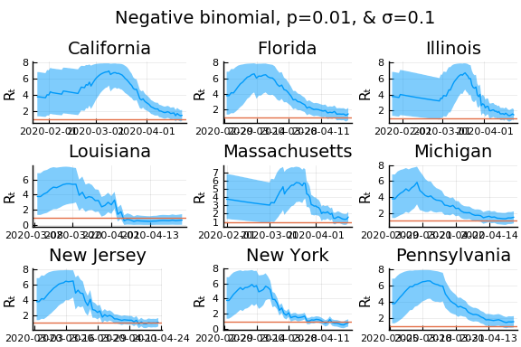
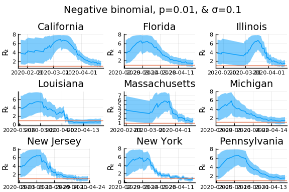


What Systrom did was smooth the new cases before using the Poisson distribution. He used a window width of $7$ and Gaussian weights with standard deviation $2$.
using RollingFunctions
σ = 0.25
Plots.closeall()
for w in [3, 7, 11]
for s in [0.5, 2, 4]
γ =1/7
nbp = 0.01
figs = []
for gdf in groupby(sdf, :state)
windowsize = w
weights = pdf(Normal(0, s), -floor(windowsize/2):floor(windowsize/2))
weights = weights/sum(weights)
smoothcases = Int.(round.(runmean(gdf.newcases[2:end], windowsize, weights*windowsize)))
p, m, cr = rtpost(smoothcases, γ, σ, x->pdf(truncated(Gamma(4,1),0,8), x),
(λ,x)->pdf(Poisson(λ),x))
f = plot(gdf.date, m, ribbon=(m-cr[:,1], cr[:,2] - m), title=unique(gdf.state)[1], legend=:none, ylabel="Rₜ")
f = hline!(f,[1.0])
figs = vcat(figs, f)
end
l = @layout [a{.1h};grid(1,1)]
display(plot(plot(annotation=(0.5,0.5, "Poisson & σ=$σ, s=$s, w=$w"), framestyle = :none),
plot(figs[1:9]..., layout=(3,3)), layout=l, reuse=false))
end
end
(t, cases[t], cases[t - 1]) = (54, -4, 68)
(t, cases[t], cases[t - 1]) = (90, -12, 390)
(t, cases[t], cases[t - 1]) = (56, -4, 68)
(t, cases[t], cases[t - 1]) = (58, -4, 68)
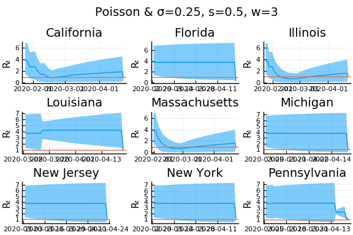 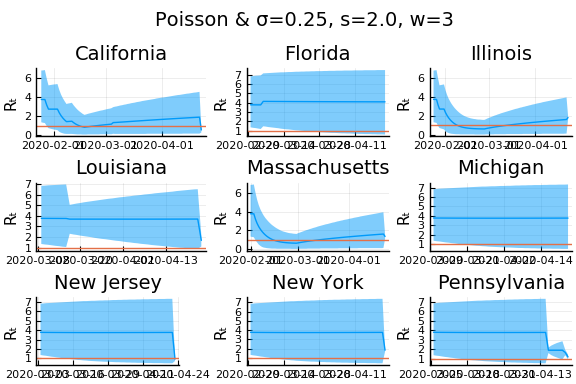 


 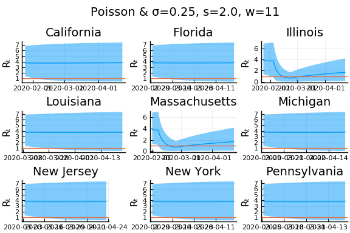
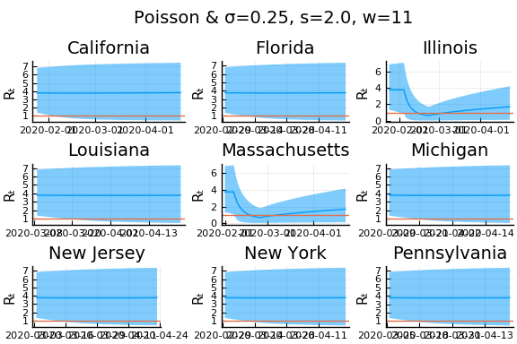 
Here we see that we can get a variety of results depending on the smoothing used. All of these posteriors ignore the uncertainty in the choice of smoothing parameters (and procedure).
An alternative approach¶
Here we follow an approach similar in spirit to Systrom, with a few modifications and additions. The primary modification is that we alter the model of $k_t|k_{t-1}, R_t$ to allow measurement error in both $k_t$ and $k_{t-1}$. We make four additions. First, we utilize data on movement and business operations as auxillary noisy measures of $R_t$. Second, we allow state policies to shift the mean of $R_t$. Third, we combine data from all states to improve precision in each. Fourth, we incorporate testing numbers into the data.
As above, we begin from the approximation
where $k^*$ is the true, unobserved number of new cases. Taking logs and rearranging we have
Let $k_{s,t}$ be the noisy observed value of $k^*_{s,t}$, then
where and $\epsilon_{s,t}$ is measurement error.
With appropriate assumptions on $\epsilon$, $\tau$, $R$ and other observables, we can then use regression to estimate $R$.
As a simple example, let’s assume
- $R_{s,t} = R_{s,0} + \alpha d_{s,t}$ where $d_{s,t}$ are indicators for NPI’s being in place.
- That $\tau_{s,t}$ is constant over time for each $s$
- $E[\epsilon_{s,t} - \epsilon_{s,t-1}|d] = 0$ and $\epsilon_{s,t} - \epsilon_{s,t-1}$ is uncorrelated over time (just to simplify; this is not a good assumption).
```{=html}
``` julia
using GLM, RegressionTables
pvars = [Symbol("Stay.at.home..shelter.in.place"),
Symbol("State.of.emergency"),
Symbol("Date.closed.K.12.schools"),
Symbol("Closed.gyms"),
Symbol("Closed.movie.theaters"),
Symbol("Closed.day.cares"),
Symbol("Date.banned.visitors.to.nursing.homes"),
Symbol("Closed.non.essential.businesses"),
Symbol("Closed.restaurants.except.take.out")]
sdf = copy(df)
for p in pvars
sdf[!,p] = by(sdf, :state, (:date, p) => x->(!ismissing(unique(x[p])[1]) .& (x.date .>= unique(x[p])[1]))).x1
end
sdf = sort(sdf, [:state, :date])
sdf[!,:newcases] = by(sdf, :state, newcases = :cases => x->(vcat(missing, diff(x))))[!,:newcases]
sdf[!,:dlogk] = by(sdf, :state, dlogk = :newcases => x->(vcat(missing, diff(log.(max.(x,0.1))))))[!,:dlogk]
fmla = FormulaTerm(Term(:dlogk), Tuple(Term.(vcat(pvars,:state))))
reg = lm(fmla, sdf)
regtable(reg, renderSettings=asciiOutput())
-----------------------------------------------
dlogk
-------
(1)
-----------------------------------------------
(Intercept) 0.047
(0.155)
Stay.at.home..shelter.in.place -0.160
(0.094)
State.of.emergency 0.200*
(0.080)
Date.closed.K.12.schools 0.246*
(0.118)
Closed.gyms -0.208
(0.200)
Closed.movie.theaters 0.128
(0.204)
Closed.day.cares 0.031
(0.100)
Date.banned.visitors.to.nursing.homes -0.050
(0.083)
Closed.non.essential.businesses -0.102
(0.110)
Closed.restaurants.except.take.out -0.143
(0.159)
state: Alaska -0.033
(0.219)
state: Arizona -0.036
(0.221)
state: Arkansas -0.030
(0.226)
state: California 0.015
(0.222)
state: Colorado 0.069
(0.217)
state: Connecticut 0.006
(0.218)
state: Delaware 0.016
(0.216)
state: District of Columbia 0.002
(0.219)
state: Florida -0.006
(0.218)
state: Georgia -0.044
(0.218)
state: Hawaii -0.117
(0.229)
state: Idaho 0.006
(0.218)
state: Illinois 0.036
(0.215)
state: Indiana 0.020
(0.219)
state: Iowa 0.034
(0.220)
state: Kansas -0.118
(0.221)
state: Kentucky -0.061
(0.216)
state: Louisiana 0.049
(0.217)
state: Maine 0.017
(0.219)
state: Maryland 0.009
(0.214)
state: Massachusetts 0.053
(0.213)
state: Michigan 0.043
(0.213)
state: Minnesota 0.030
(0.216)
state: Mississippi -0.011
(0.218)
state: Missouri -0.098
(0.218)
state: Montana -0.022
(0.216)
state: Nebraska -0.075
(0.218)
state: Nevada -0.006
(0.219)
state: New Hampshire 0.012
(0.216)
state: New Jersey 0.051
(0.216)
state: New Mexico -0.050
(0.216)
state: New York 0.082
(0.217)
state: North Carolina 0.009
(0.216)
state: North Dakota -0.090
(0.218)
state: Ohio 0.046
(0.213)
state: Oklahoma -0.054
(0.217)
state: Oregon -0.019
(0.215)
state: Pennsylvania 0.022
(0.213)
state: Rhode Island 0.012
(0.213)
state: South Carolina -0.091
(0.216)
state: South Dakota -0.165
(0.220)
state: Tennessee 0.005
(0.216)
state: Texas 0.033
(0.217)
state: Utah -0.112
(0.218)
state: Vermont -0.019
(0.213)
state: Virginia -0.031
(0.220)
state: Washington 0.029
(0.217)
state: West Virginia -0.016
(0.216)
state: Wisconsin 0.013
(0.219)
state: Wyoming -0.077
(0.218)
-----------------------------------------------
Estimator OLS
-----------------------------------------------
N 4,539
R2 0.006
-----------------------------------------------
From this we get that if we assume $\gamma = 1/7$, then the the baseline estimate of $R$ in Illinois is $7(0.046 + 0.034) + 1\approx 1.56$ with a stay at home order, $R$ in Illinois becomes $7(0.046 + 0.035 - 0.147) + 1 \approx 0.53$.
Some of the policies have positive coefficient estimates, which is strange. This is likely due to assumption 1 being incorrect. There is likely an unobserved component of $R_{s,t}$ that is positively correlated with policy indicators.
State space model¶
A direct analog of Systrom’s approach is to treat $R_{s,t}$ as an unobserved latent process. Specifically, we will assume that
Note that the Poisson assumption on the distribution of $k_{s,t}$ used by Systrom implies an extremely small $\sigma^2_k$, since the variance of log Poisson($\lambda$) distribution is $1/\lambda$.
If $\epsilon_{s,t} - \epsilon_{s,t-1}$ weere independent over $t$, we could compute the likelihood and posteriors of $R_{s,t}$ through the standard Kalman filter. Of course, $\epsilon_{s,t} - \epsilon_{s,t-1}$ is not independent over time, so we must adjust the Kalman filter accordingly. We follow the approach of (???) to make this adjustment.
!!! question Is there a better reference? I’m sure someone did this much earlier than 2019…
We estimate the parameters using data from US states. We set time 0 as the first day in which a state had at least 10 cumulative cases. We then compute posteriors for the parameters by MCMC. We place the following priors on the parameters.
using Distributions, TransformVariables, DynamicHMC, MCMCChains, Plots, StatsPlots,
LogDensityProblems, Random, LinearAlgebra
include("jmd/rtmod.jl")
rlo=-1
rhi=1.1
priors = (γ = truncated(Normal(1/7,1/7), 1/28, 1/1),
σR0 = truncated(Normal(1, 3), 0, Inf),
μR0 = truncated(Normal(1, 3), 0, Inf),
σR = truncated(Normal(0.25,1),0,Inf),
σk = truncated(Normal(0.1, 5), 0, Inf),
#ρ = Uniform(-1,1.1))
ρ = Uniform(rlo, rhi))
(γ = Truncated(Normal{Float64}(μ=0.14285714285714285, σ=0.14285714285714285
), range=(0.03571428571428571, 1.0)), σR0 = Truncated(Normal{Float64}(μ=1.0
, σ=3.0), range=(0.0, Inf)), μR0 = Truncated(Normal{Float64}(μ=1.0, σ=3.0),
range=(0.0, Inf)), σR = Truncated(Normal{Float64}(μ=0.25, σ=1.0), range=(0
.0, Inf)), σk = Truncated(Normal{Float64}(μ=0.1, σ=5.0), range=(0.0, Inf)),
ρ = Uniform{Float64}(a=-1.0, b=1.1))
The estimation is fast and the chain appears to mix well.
day1 = Dates.Date("2020-03-01")
sdf = sort(sdf, (:state, :date));
dlogk = [filter(x->((x.state==st) .&
(x.date .>=day1)),
sdf).dlogk for st in unique(sdf.state)];
dates = [filter(x->((x.state==st) .&
(x.date .>=day1)),
sdf).date for st in unique(sdf.state)];
mdl = RT.RtRW(dlogk, priors)
trans = as( (γ = asℝ₊, σR0 = asℝ₊, μR0 = asℝ₊,
σR = asℝ₊, σk = asℝ₊, ρ=as(Real, rlo, rhi)) )
P = TransformedLogDensity(trans, mdl)
∇P = ADgradient(:ForwardDiff, P)
p0 = (γ = 1/7, σR0=1.0, μR0=4.0,σR=0.25, σk=2.0, ρ=0.9)
x0 = inverse(trans,p0)
@time LogDensityProblems.logdensity_and_gradient(∇P, x0);
1.208051 seconds (2.46 M allocations: 121.335 MiB)
rng = MersenneTwister()
steps = 100
warmup=default_warmup_stages(local_optimization=nothing,
stepsize_search=nothing,
init_steps=steps, middle_steps=steps,
terminating_steps=2*steps, doubling_stages=3, M=Symmetric)
x0 = x0
res = DynamicHMC.mcmc_keep_warmup(rng, ∇P, 2000;initialization = (q = x0, ϵ=0.1),
reporter = LogProgressReport(nothing, 25, 15),
warmup_stages =warmup);
post = transform.(trans,res.inference.chain)
p = post[1]
vals = hcat([vcat([length(v)==1 ? v : vec(v) for v in values(p)]...) for p in post]...)'
vals = reshape(vals, size(vals)..., 1)
names = vcat([length(p[s])==1 ? String(s) : String.(s).*"[".*string.(1:length(p[s])).*"]" for s in keys(p)]...)
cc = MCMCChains.Chains(vals, names)
display(cc)
Object of type Chains, with data of type 2000×6×1 reshape(::Adjoint{Float64
,Array{Float64,2}}, 2000, 6, 1) with eltype Float64
Iterations = 1:2000
Thinning interval = 1
Chains = 1
Samples per chain = 2000
parameters = γ, σR0, μR0, σR, σk, ρ
2-element Array{ChainDataFrame,1}
Summary Statistics
parameters mean std naive_se mcse ess r_hat
────────── ────── ────── ──────── ────── ───────── ──────
γ 0.1464 0.0824 0.0018 0.0031 604.4552 0.9996
σR0 0.3028 0.3306 0.0074 0.0097 1039.7345 0.9995
μR0 3.8108 1.5130 0.0338 0.0574 587.9816 0.9997
σR 0.0522 0.0589 0.0013 0.0023 699.8437 1.0003
σk 1.0111 0.0141 0.0003 0.0002 2425.6526 0.9997
ρ 0.9793 0.0050 0.0001 0.0002 792.7027 1.0006
Quantiles
parameters 2.5% 25.0% 50.0% 75.0% 97.5%
────────── ────── ────── ────── ────── ──────
γ 0.0445 0.0825 0.1261 0.1910 0.3623
σR0 0.0080 0.0850 0.1954 0.4004 1.2304
μR0 1.8633 2.6503 3.4631 4.6703 7.6341
σR 0.0010 0.0133 0.0308 0.0717 0.2168
σk 0.9828 1.0010 1.0106 1.0207 1.0394
ρ 0.9690 0.9759 0.9797 0.9830 0.9881
display(plot(cc))
The posterior for the initial distribution of $R_{0,s}$ is not very precise. The other parameters have fairly precise posteriors. Systrom fixed all these parameters, except $\sigma_R$, which he estimated by maximum likelihood to be 0.25. In these posteriors, a 95% credible region for $\sigma_R$ contains his estimate. The posterior of $\rho$ is not far from his imposed value of $1$, although $1$ is out of the 95% credible region. A 95% posterior region for $\gamma$ contains Systrom’s calibrated value of $1/7$.
It is worth noting that the estimate of $\sigma_k$ is large compared to $\sigma_r$. This will cause new observations of $\Delta \log k$ will have a small effect on the posterior mean of $R$.
Given values of the parameters, we can compute state and time specific posterior estimates of $R_{s,t}$.
states = unique(sdf.state)
s = findfirst(states.=="New York")
function plotpostr(dates, dlogk, post)
k = [RT.kalman(dlogk, p.σR, p.σk, p.σR0, p.μR0, p.γ, p.ρ) for p in post];
γ = [p.γ for p in post];
meanR = hcat([x[1] for x in k]...);
varR = hcat([x[2] for x in k]...);
zhat = hcat([x[3] for x in k]...);
c = "black"
figr = plot(dates, mean(meanR, dims=2), ribbon=1.64*mean(sqrt.(varR),dims=2), color=c, fillalpha=0.2,
linewidth=1.5, legend=:none, ylab="Rₜ")
r=([quantile(meanR[t,:] - 1.64*sqrt.(varR[t,:]), 0.05) for t in 1:size(meanR,1)],
[quantile(meanR[t,:] + 1.64*sqrt.(varR[t,:]), 0.95) for t in 1:size(meanR,1)])
figr = plot!(figr, dates, zeros(length(r[1])), ribbon=(-r[1], r[2]), color=c,
linewidth=0, ylim=nothing, fillalpha=0.2)
figr = hline!(figr, [1.], color="red", linewidth=1.5, linestyle=:dash)
gr = copy(meanR)
for i=1:length(γ)
gr[:,i] .= γ[i]*(meanR[:,i].-1)
end
figk = plot(dates, [dlogk mean(gr, dims=2) mean(zhat,dims=2).-mean(γ)],
labels=["Δlog(newcases)" "γ(R-1)" "Eₜ[Δlog(newcases)]"],
legend=:topright, linewidth=2)
return(figr, figk)
end
figr, figk = plotpostr(dates[s],dlogk[s],post)
l = @layout [a{.1h};
grid(2,1)]
plot(plot(annotation=(0.5,0.5, states[s]), framestyle = :none),
figr, figk, layout=l)
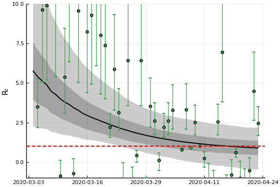
The top panel of this figure shows the posterior distribution of $R_{s,t}$ in New York. The black line is the posterior mean. The dark grey region is the average (over model parameters) of a 90% credible region conditional on the model parameters. This is comparable to what Systrom (and many others) report, and ignores uncertainty in the model parameters. The light grey region is a 90% credile region taking into account parameter uncertainty.
The lower panel shows the observed $\Delta log k$, the prediction of it attributable to $R_t$, and the prediction of it from the full model. The full preduction uses the negatively correlated $MA(1)$ errors in $\Delta log k$ in addition to $R_t$ to forecast $E[\Delta \log k_{t+1} | \mathcal{I}_t]$.
Posteriors for all States¶
S = length(states)
figs = fill(plot(), 9*(S ÷ 9 + 1))
for s in 1:S
figr, figk = plotpostr(dates[s],dlogk[s],post)
l = @layout [a{.1h};
grid(1,1)]
figs[s] = plot(plot(annotation=(0.5,0.5, states[s]), framestyle = :none),
figr, layout=l)
if ((s % 9) ==0 || ( s==length(states)))
display(plot(figs[(s-8):s]..., layout=(3,3), reuse=false))
end
end
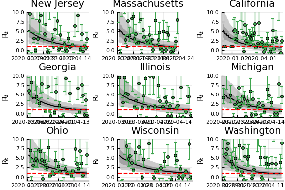 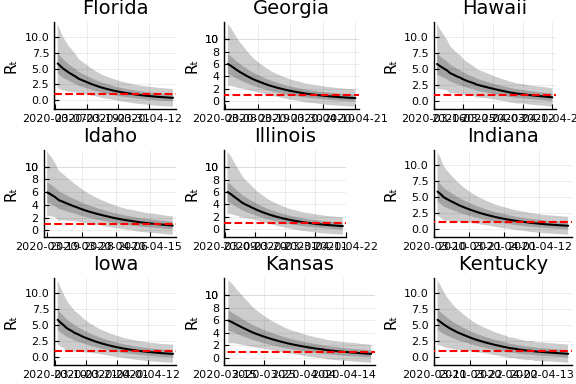
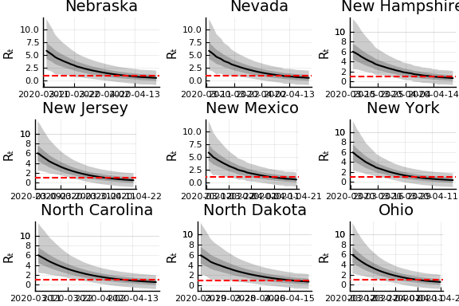  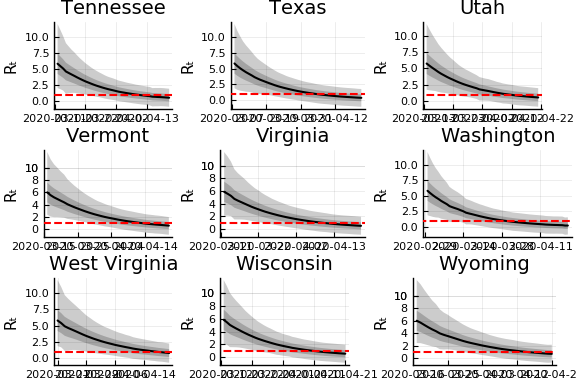
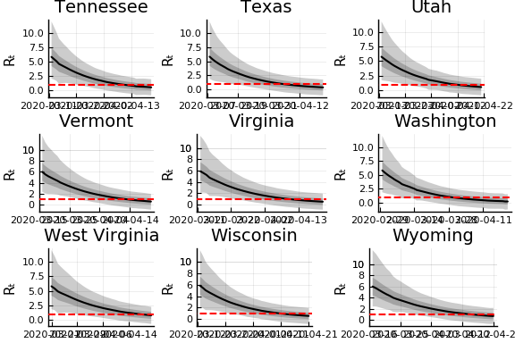
We can see that the posteriors vary very little from state to state. The model picks up a general downward trend in $\Delta \log k$ through the slightly less than 1 estimate of $\rho$. This drives the posteriors of $R_{s,t}$ in every state to decrease over time. Since $\sigma_k >> \sigma_R$, the actual realizations of $\Delta \log k$ do not affect the state-specific posteriors very much.
!!! note I also tried fixing $\rho=1$. This gives similar results in terms of $\sigma_k >> \sigma_R$, and gives posterior $R_{s,t}$ that approximately constant over time.
Bettencourt, Ruy M., Luís M. A. AND Ribeiro. 2008. “Real Time Bayesian Estimation of the Epidemic Potential of Emerging Infectious Diseases.” PLOS ONE 3 (5): 1–9. https://doi.org/10.1371/journal.pone.0002185.